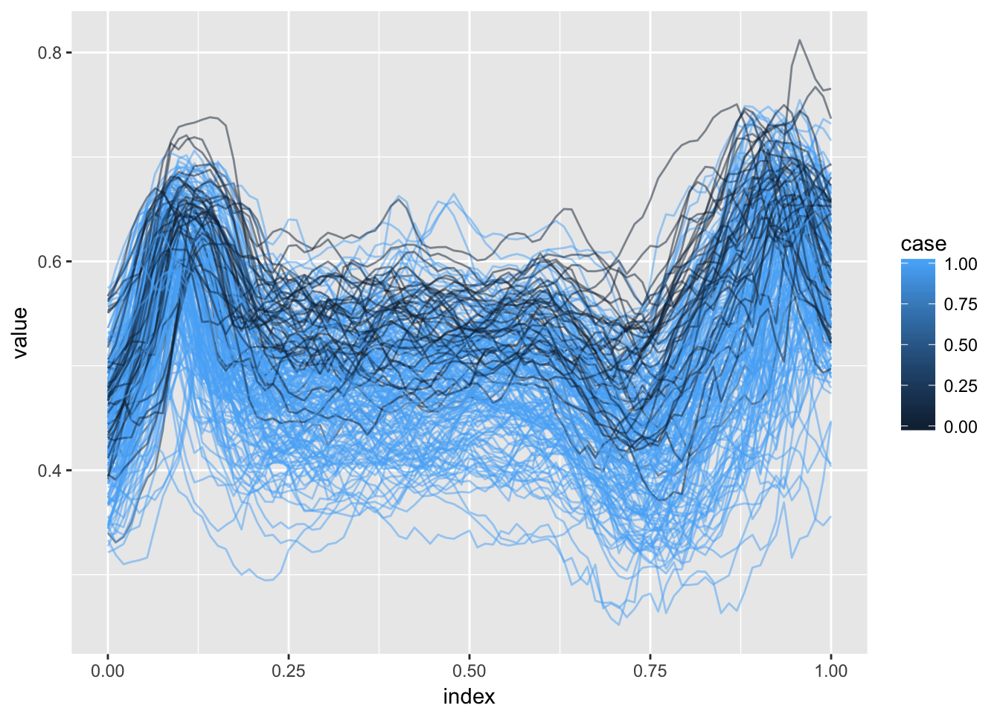

Short Course
This page contains a combination of traditional lecture materials (slides) and code demonstrating the relevant methods. The short course will proceed by working through both. We will use several recent packages in our examples; see the About page for information about the package versions.
library(tidyverse)
## Warning: package 'tidyverse' was built under R version 3.2.5
## Loading tidyverse: ggplot2
## Loading tidyverse: tibble
## Loading tidyverse: tidyr
## Loading tidyverse: readr
## Loading tidyverse: purrr
## Loading tidyverse: dplyr
## Warning: package 'ggplot2' was built under R version 3.2.5
## Warning: package 'tibble' was built under R version 3.2.5
## Warning: package 'tidyr' was built under R version 3.2.5
## Warning: package 'purrr' was built under R version 3.2.5
## Warning: package 'dplyr' was built under R version 3.2.5
## Conflicts with tidy packages ----------------------------------------------
## filter(): dplyr, stats
## lag(): dplyr, stats
library(grpreg)
## Warning: package 'grpreg' was built under R version 3.2.5
## Loading required package: Matrix
##
## Attaching package: 'Matrix'
## The following object is masked from 'package:tidyr':
##
## expand
##
## Attaching package: 'grpreg'
## The following object is masked from 'package:dplyr':
##
## select
library(splines)
library(refund)
## Warning: package 'refund' was built under R version 3.2.5
library(refund.shiny)
## Warning: package 'refund.shiny' was built under R version 3.2.5Overview of variable selection
Methods for variable selection
(placeholder for slides talking about penalization, group penalization, and bayesian variable selection methods)
Practical examples
(code and text for group penalization, especially MCP)
Scalar-on-function regression
In this section we’ll use the DTI dataset to motivate the scalar-on-function regression model and variable selection in this context. Our main outcome of interest is multiple sclerosis case status, and the possible predictors are tract profiles from several major white matter structures. Below we plot profiles for one tract colored by MS case status.
load("./DataCode/DTI.RDA")
as_refundObj(CCA_ani) %>%
left_join(dplyr::select(outcome_data, id, case)) %>%
ggplot(aes(x = index, y = value, group = id, color = case)) + geom_path(alpha = .5)
## Joining, by = "id"
Methods for variable selection
Slides below review scalar-on-function regression and introduce the ideas for variable selection in this context.
(placeholder for slides: review sofr using fpca, splines; variable selection using group penalties; extensions to generalized sofr; discuss challenges, including sparse or incomplete data, smoothness constraints, and scaling)
Practical example
Some DTI profiles are incomplete; we can use FPCA to obtain estimates over a complete domain.
fpca_ex = fpca.sc(CSTL_ani)
bind_rows(as_refundObj(fpca_ex$Y) %>% mutate(type = "Observed"),
as_refundObj(fpca_ex$Yhat) %>% mutate(type = "Fitted")) %>%
ggplot(aes(x = index, y = value, group = id)) + geom_path(alpha = .5) +
facet_grid(~type)
(Incidentally, the refund.shiny package has helpful tools for visualizing the results of an FPCA analysis).
plot_shiny(fpca_ex)Several steps are needed to organize the functional predictors to fit the scalar-on-function regression with variable selection. In particular, for this dataset we use FPCA on each predictor; scale the resulting reconstructions; and combine with a spline basis. The code below implements these steps and produces a list containing the result for each predictor.
predictor_names = paste(rep(c("CSTR", "CSTL", "CCA", "OPRL", "OPRR"), each = 6),
rep(c("ani", "l0", "lt", "md", "mtr", "t2"), 5),
sep = "_")
preprocess_fd_for_sofr = function(data_matrix){
index = seq(0, 1, length = dim(data_matrix)[2])
basis = splines::bs(index, df = 10, intercept = TRUE)
int_weights = rep(1 / dim(data_matrix)[2], dim(data_matrix)[2])
fitted_vals = fpca.sc(data_matrix, npc = 10)$Yhat
scaled_fv = scale(fitted_vals)
design_mat = scaled_fv %*% diag(int_weights) %*% basis
}
processed_predictors = lapply(predictor_names, function(u) {
data_mat_cur = get(u)
preprocess_fd_for_sofr(data_mat_cur)
})Given the processed predictors, we construct the design matrix and fit the model using the group variable selection illustrated previously.
y = outcome_data$case
X = do.call(cbind, processed_predictors)
group = rep(1:30, each = 10)
sofr_fit = grpreg(X = X, y = y, group = group, family = "binomial", penalty = "grLasso")Try it yourself!
(some intro to the sugar data)
Function-on-scalar regression
In this section we’ll use the Activity data to motivate the function-on-scalar regression model and variable selection in this context. Our main outcome of interest is the observed physical activity profile, with predictors including age, sex, and season. Below we plot activity profiles colored by sex.
Methods for variable selection
Slides below review function-on-scalar regression and introduce the ideas for variable selection in this context.
(placeholder for slides: review fosr using splines; variable selection using group penalties; correlated errors (GLS or Bayes methods); discuss challenges, including sparse or incomplete data, smoothness constraints, and scaling)
Practical example
(code and text for OLS-based fosr in the accelerometer example; include Yakuan’s function and results)
Try it yourself!
Using the DTI data with several predictors.
Other topics
Time permitting? VBVS in concurrent model. Prediction more generally (ensemble prediction)